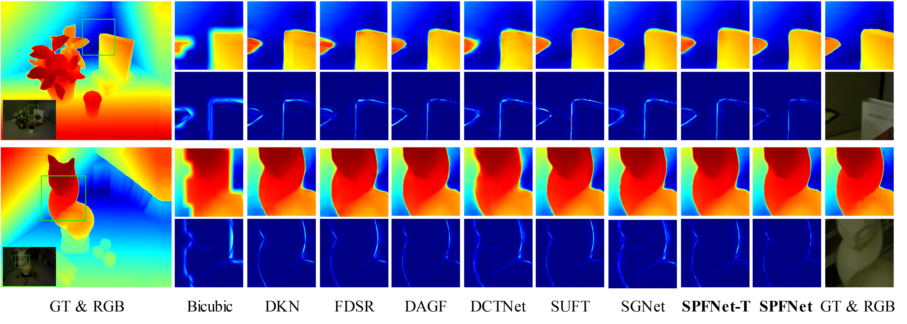
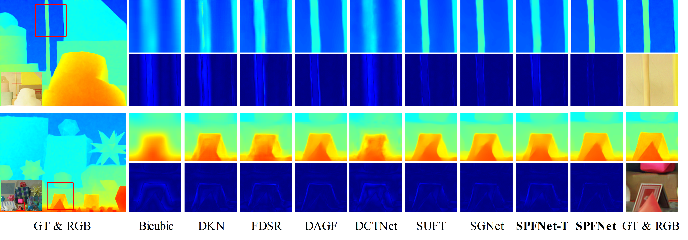

Scene Prior Filtering for Depth Map Super-Resolution
1Nanjing University of Science and Technology
2University of California at Merced
3Nanjing University of Posts and Telecommunications
4Nanjing University
Abstract
Multi-modal fusion is vital to the success of super-resolution of depth images. However, commonly used fusion strategies, such as addition and concatenation, fall short of effectively bridging the modal gap. As a result, guided image filtering methods have been introduced to mitigate this issue. Nevertheless, it is observed that their filter kernels usually encounter significant texture interference and edge inaccuracy. To tackle these two challenges, we introduce a Scene Prior Filtering network, SPFNet, which utilizes the priors surface normal and semantic map from large scale models. Specifically, we design an All-in-one Prior Propagation that computes the similarity between multi-modal scene priors, i.e., RGB, normal, semantic, and depth, to reduce the texture interference. In addition, we present a One-to-one Prior Embedding that continuously embeds each single-modal prior into depth using Mutual Guided Filtering, further alleviating the texture interference while enhancing edges. Our SPFNet has been extensively evaluated on both real and synthetic datasets, achieving state-of-the-art performance. The source codes and pre-trained models are available at https://github.com/yanzq95/SPFNet.
Method

Overview of SPFNet (left) and its distilled variant SPFNet-D (right).

Scheme of (a) All-in-one Prior Propagation (APP), and (b) histogram comparison of scene prior features before and after APP.

Scheme of (a) One-to-one Prior Embedding (OPE), and (b) gradient histogram of filter kernels in the texture area (green box). The surface normal, semantic, and RGB kernels are generated by our Mutual Guided Filtering (MGF).
Quantitative Comparison

Visual Comparison

Visual results and error maps on NYU-v2 dataset (x16).

Visual results and error maps on RGB-D-D dataset (x16).

Visual results and error maps on Lu dataset (x16).

Visual results and error maps on Middlebury dataset (x16).

Visual results on real-world RGB-D-D dataset.

Visual results of joint DSR and denoising on NYU-v2 and Middlebury (x16).
BibTex
@article{wang2024scene,
title={Scene Prior Filtering for Depth Map Super-Resolution},
author={Wang, Zhengxue and Yan, Zhiqiang and Yang, Ming-Hsuan and Pan, Jinshan and Yang, Jian and Tai, Ying and Gao, Guangwei},
journal={arXiv preprint arXiv:2402.13876},
year={2024}
}
Contact
For any questions, please contact {zxwang,yanzq}@njust.edu.cn